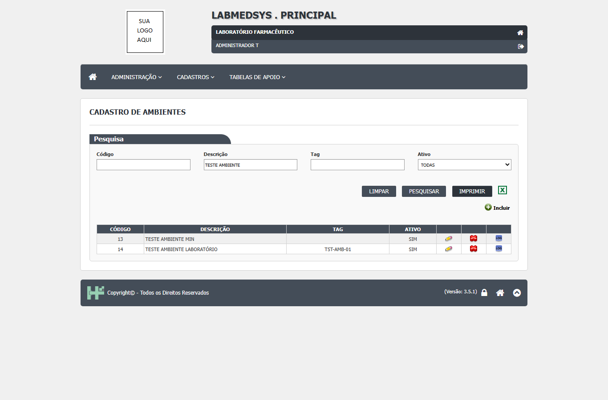
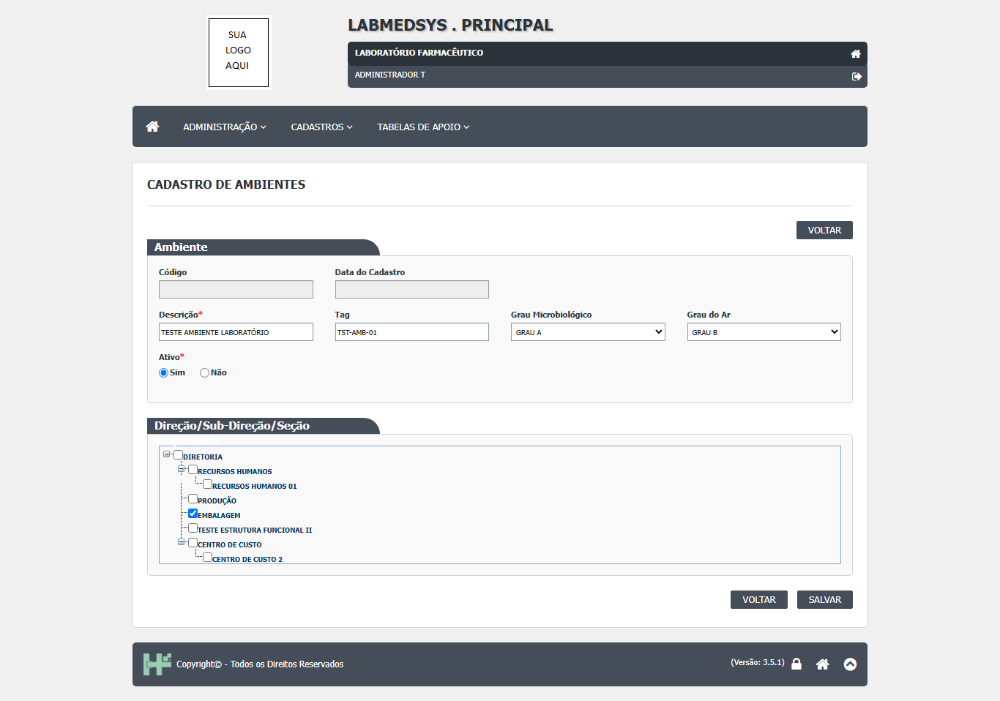
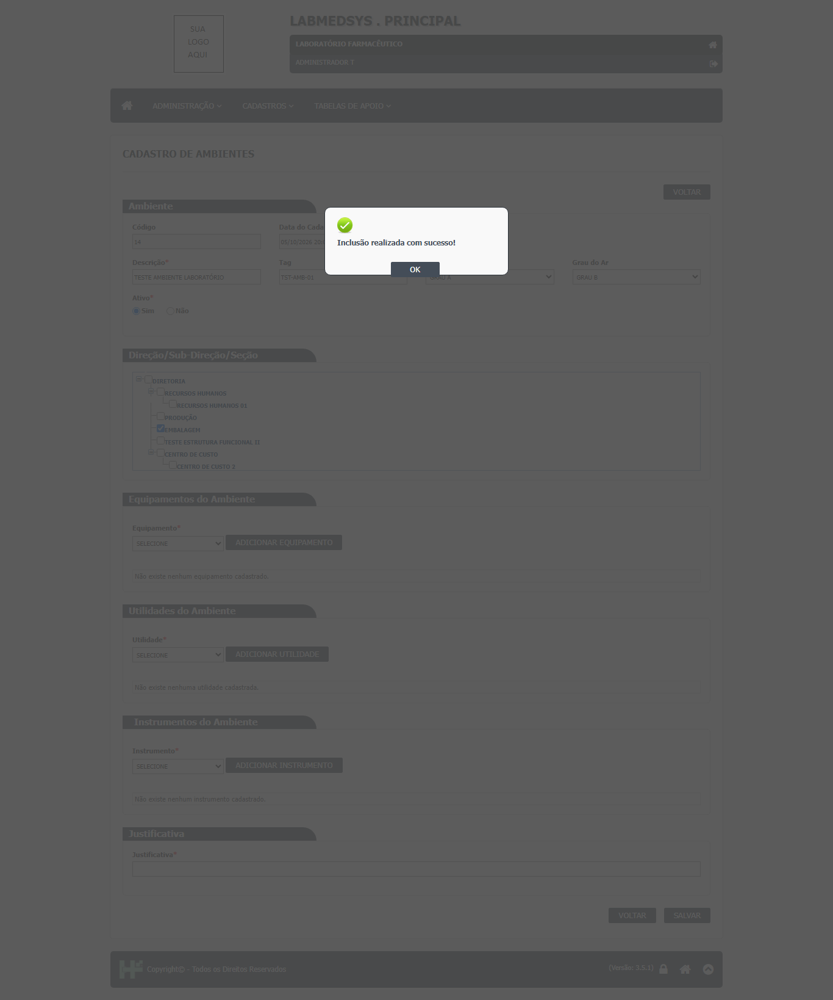
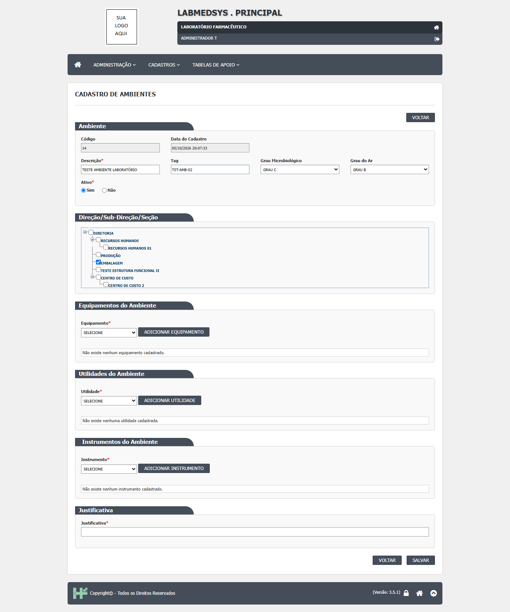
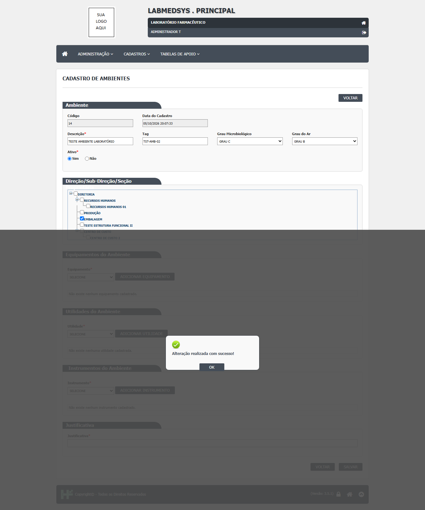
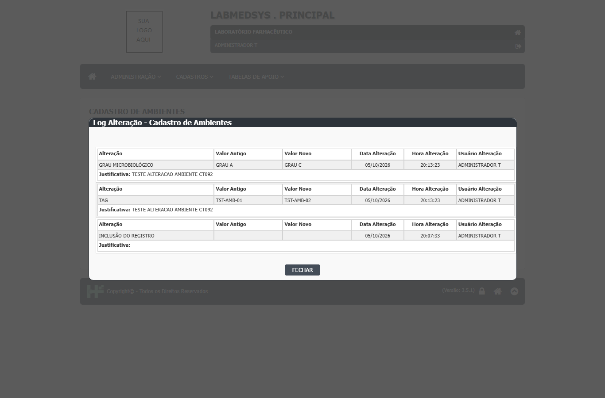
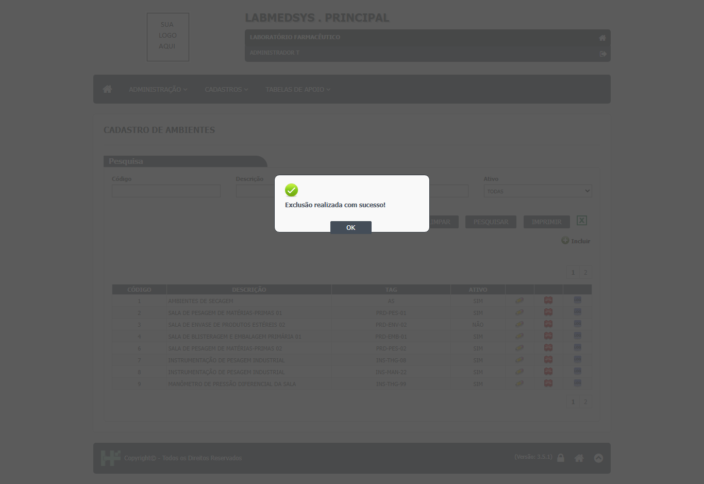
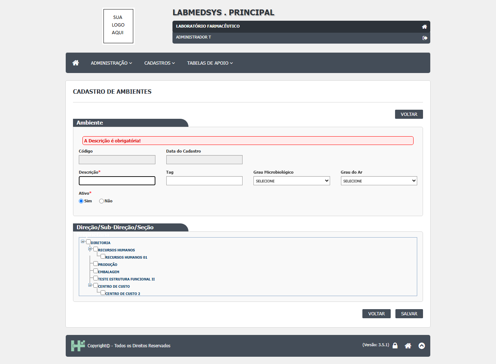
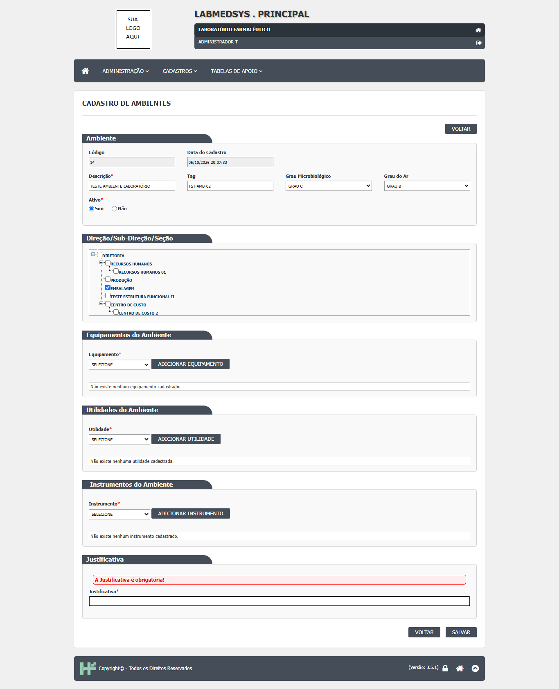
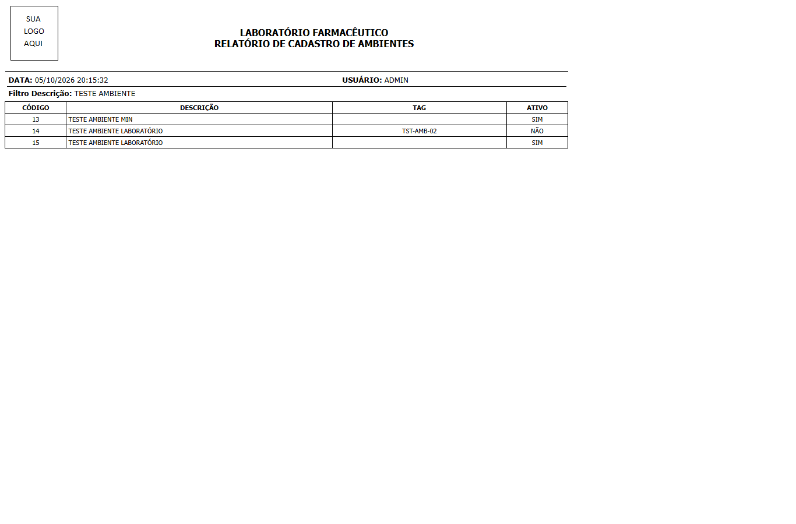

Para que serve
Cadastra as salas e áreas da fábrica (laboratório, sala de pesagem, corredor, câmara) e diz, para cada uma, o grau de contaminação do ar e o microbiológico, em que ponto da estrutura funcional ela está e quais equipamentos, utilidades e instrumentos estão instalados nela. É o cadastro-mãe do que a norma chama de "áreas": os outros cadastros (Pontos de água, Utilidades, Equipamentos) e os outros módulos se penduram nele (ponto de água de uma sala, programação de análise do ambiente, lote padrão). O cadastro guarda também o histórico de alterações campo a campo (ambiente_ed.aspx.cs:831-932 e dalLogAlteracaoAmbiente.cs:13-129).
Quem usa e em que etapa do processo
Quem usa
- Quem mantém o cadastro de áreas e equipamentos: Engenharia, Manutenção ou Garantia da Qualidade, conforme a empresa (leitura da área; o sistema não diz).
- Os módulos Produção e, pela API, outros módulos leem a lista de ambientes.
- Quem pode abrir, incluir, alterar, excluir, imprimir e ver o histórico está em "Quem pode usar (permissões)", mais abaixo.
Em que etapa do processo entra (tela 1 do menu Cadastros, módulo Principal)
- Pelo menu Cadastros. Antes de usar, convém ter cadastrados os graus de contaminação (tela 14 deste menu), a estrutura funcional (tela 09), os equipamentos, utilidades e instrumentos (telas 02, 13 e 08), porque o formulário só oferece o que já existe e está ativo.
- A lista abre vazia; é preciso clicar em Pesquisar.
O que acontece depois (para onde o trabalho segue)
- Salvar um ambiente novo grava o registro com a data e o usuário de criação e uma linha "INCLUSÃO DO REGISTRO" no histórico. Em seguida o formulário recarrega e, só então, aparecem as áreas de Equipamentos, Utilidades e Instrumentos do ambiente.
- Salvar uma alteração exige a justificativa, grava os campos e uma linha no histórico para cada campo mudado; volta à lista.
- Adicionar ou excluir um equipamento, utilidade ou instrumento do ambiente grava na hora, sem botão Salvar e sem justificativa.
- Excluir (na lista) manda o ambiente para a lixeira, sem justificativa, e escreve "EXCLUSÃO DO REGISTRO" no histórico, que depois não pode mais ser consultado pelas telas.
- O próximo passo da corrente é o uso do ambiente em outros cadastros e módulos: Pontos de água, Utilidades, programações de análise e lotes padrão.
Fonte: Resumo da tela e fluxo da tela (leitura do código e dos testes). O que for leitura da área precisa ser validado com a área.
Antes de começar (o que precisa existir)
Tenha à mão a descrição da sala, uma tag (opcional, até 10 caracteres) e, se for informar, os graus de contaminação e o local da estrutura funcional. Os equipamentos, as utilidades e os instrumentos da sala só podem ser ligados depois que o ambiente estiver gravado.
Passo a passo
Situação das imagens (14/11/2026): imagens reaproveitadas dos testes de 05/10/2026 (rodada 1), cada uma conferida contra o texto. Sem imagem: recusa de tag repetida ("Tag já existe!"), recusa de exclusão com dependente (a mensagem), ligar equipamento, utilidade e instrumento ao ambiente, ícone Consultar, o arquivo do Excel e o histórico de um ambiente excluído (a tela não oferece).
Tela de lista
- Passo 1. No menu Cadastros, abra Ambientes. A tela mostra o quadro "Pesquisa" e uma área vazia. Clique em Pesquisar para listar (ambiente_lst.aspx.cs:64-71).
- Passo 2. Filtros: Código, Descrição (procura dentro do texto; acentos contam: "laboratorio" não acha "LABORATÓRIO"), Tag e Ativo (TODAS, SIM, NÃO) (ambiente_lst.aspx:39-59; dalAmbiente.cs:20-36; CT-PRI-096).
- Passo 3. A lista mostra Código, Descrição, Tag e Ativo, com os ícones Editar, Consultar, Excluir e Ver Log; só aparecem os ícones para os quais você tem permissão. Imprimir e Excel aparecem depois de uma pesquisa com resultado, se você pode imprimir (ambiente_lst.aspx:90-135; ambiente_lst.aspx.cs:46-61).

Figura 1: A lista de Cadastro de Ambientes depois de Pesquisar com o filtro Descrição "TESTE AMBIENTE": filtros Código, Descrição, Tag e Ativo, botões LIMPAR, PESQUISAR, IMPRIMIR, Excel e Incluir, e os ícones Editar, Excluir e LOG em cada linha.
- Passo 4. Sem resultado, a tela diz "A pesquisa não retornou nenhum resultado." (ambiente_lst.aspx:78).
Figura 2: Pesquisa por "laboratorio" (sem acento): a grade fica vazia e a tela diz "A pesquisa não retornou nenhum resultado.", embora exista o ambiente "LABORATÓRIO" (DV-PRI-008).
Cadastrar um ambiente
- Passo 5. Na lista, clique em Novo (ícone de adicionar). Preencha Descrição (obrigatória, até 255 caracteres) e, se quiser, Tag (até 10), Grau Microbiológico, Grau do Ar e o local na árvore de estrutura funcional (marque um só local). Ativo vem como Sim (ambiente_ed.aspx:47-104).

Figura 3: O formulário de inclusão preenchido: Descrição, Tag, Grau Microbiológico, Grau do Ar, Ativo = Sim e o local "EMBALAGEM" marcado na árvore Direção/Sub-Direção/Seção.
- Passo 6. Clique em SALVAR e responda SIM a "Confirma a inclusão do item?". A tela diz "Inclusão realizada com sucesso!" (ambiente_ed.aspx.cs:872 e 1060). Os campos obrigatórios só são cobrados depois do SIM (OBS-03 da rodada 1).

Figura 4: "Inclusão realizada com sucesso!" depois de SALVAR e SIM; atrás, o formulário recarregado já com os quadros Equipamentos, Utilidades e Instrumentos do Ambiente.
- Passo 7. Depois de gravado, aparecem três quadros: Equipamentos do Ambiente, Utilidades do Ambiente e Instrumentos do Ambiente. Em cada um, escolha o item na lista e clique em ADICIONAR EQUIPAMENTO, ADICIONAR UTILIDADE ou ADICIONAR INSTRUMENTO. O item é gravado na hora. Um item só pode estar em um ambiente ativo: se já estiver em outro, o sistema recusa com "Equipamento já vinculado a um Ambiente!" (ou o equivalente para utilidade e instrumento) (ambiente_ed.aspx:116-117, 191-192 e 264-265).
Alterar, inativar e consultar
- Passo 8. Na lista, clique em Editar. Mude o que precisar, preencha a Justificativa (obrigatória) e clique em SALVAR. O histórico passa a ter uma linha por campo mudado, com valor antigo, valor novo, usuário, data, hora e justificativa (ambiente_ed.aspx.cs:174-176 e 895-905; CT-PRI-092).

Figura 5: O formulário de alteração do ambiente com a Tag e o Grau Microbiológico mudados e o campo Justificativa ainda vazio, antes de salvar.

Figura 6: "Alteração realizada com sucesso!" depois de salvar a alteração com justificativa.
- Passo 9. Para tirar o ambiente de uso, mude Ativo para Não, justifique e salve. O ambiente inativo abre travado: só a situação e a justificativa podem ser mexidas (ambiente_ed.aspx.cs:163-176). Ele deixa de aparecer nas listas de escolha do Principal, como a de Ponto de água (CT-PRI-093).
Figura 7: O formulário do ambiente com Ativo = Não marcado, antes de salvar.
Figura 8: A lista filtrada mostrando o ambiente inativado com Ativo = NÃO.
- Passo 10. Consultar abre o mesmo formulário (ambiente_lst.aspx.cs:171-173). Ver Log abre o histórico do registro em uma janela (ambiente_lst.aspx.cs:174-187).

Figura 9: A janela "Log Alteração - Cadastro de Ambientes": as mudanças de GRAU MICROBIOLÓGICO e de TAG (valor antigo, valor novo, data, hora, usuário e justificativa) e a linha "INCLUSÃO DO REGISTRO".
Excluir
- Passo 11. Na lista, clique no ícone de excluir e responda SIM a "Confirma a exclusão do item?". O sistema não pede justificativa (DV-PRI-009). O ambiente vai para a lixeira e sai da lista. Se outro cadastro o usa (por exemplo, um ponto de água), a exclusão é recusada com "Exclusão inválida, existem referências com outras tabelas.", sem dizer qual (CT-PRI-094 e 095).

Figura 10: "Exclusão realizada com sucesso!" sobre a lista: a exclusão foi feita só com a pergunta de confirmação, sem pedir justificativa (DV-PRI-009).
Figura 11: A lista filtrada pelo ambiente excluído: "A pesquisa não retornou nenhum resultado."
- Passo 12. Depois de excluído, não há tela para consultar o histórico dele (DV-PRI-014).
O que acontece ao confirmar ou salvar
- Salvar um ambiente novo grava o registro com a data e o usuário de criação e uma linha "INCLUSÃO DO REGISTRO" no histórico (bllAmbiente.cs:104-134). Em seguida o formulário recarrega e, só então, aparecem as áreas de Equipamentos, Utilidades e Instrumentos do ambiente (ambiente_ed.aspx.cs:130-142 e 873).
- Salvar uma alteração exige a justificativa, grava os campos e uma linha no histórico para cada campo mudado; volta à lista (bllAmbiente.cs:136-166; ambiente_ed.aspx.cs:895-905 e 1001-1004).
- Adicionar ou excluir um equipamento, utilidade ou instrumento do ambiente grava na hora, sem botão Salvar e sem justificativa (ambiente_ed.aspx.cs:575-577, 635-637, 695-697 e 734-736, 770-772, 806-808).
- Excluir (na lista) manda o ambiente para a lixeira, sem justificativa, e escreve "EXCLUSÃO DO REGISTRO" no histórico, que depois não pode mais ser consultado pelas telas (ambiente_lst.aspx.cs:397-437; dalLogAlteracaoAmbiente.cs:118-129; DV-PRI-009 e DV-PRI-014).
- O próximo passo da corrente é o uso do ambiente em outros cadastros e módulos: Pontos de água, Utilidades, programações de análise e lotes padrão.
Registro em uso por outro cadastro (inativar ou excluir):
- Na lista, clique no ícone de excluir e responda SIM a "Confirma a exclusão do item?". O sistema não pede justificativa (DV-PRI-009). O ambiente vai para a lixeira e sai da lista. Se outro cadastro o usa (por exemplo, um ponto de água), a exclusão é recusada com "Exclusão inválida, existem referências com outras tabelas.", sem dizer qual (CT-PRI-094 e 095).
O que o sistema recusa
- A Descrição é obrigatória!: Salvar sem descrição (vista em teste, CT-PRI-091, 05/10/2026) (ambiente_ed.aspx:61)
- A Situação é obrigatório!: Salvar sem a situação (ambiente_ed.aspx:85)
- Tag já existe!: Tag repetida (bllAmbiente.cs:112 e 147)
- A Justificativa é obrigatória!: Alterar sem justificativa (vista em teste, CT-PRI-092, 05/10/2026) (ambiente_ed.aspx:351)
- Exclusão inválida, existem referências com outras tabelas.: Exclusão de ambiente com dependentes (vista em teste, CT-PRI-095, 05/10/2026) (bllAmbiente.cs:176)
- O Equipamento é obrigatório! / A Utilidade é obrigatória! / O Instrumento é obrigatório!: Adicionar sem escolher o item (ambiente_ed.aspx:129, 204 e 277)
- Equipamento já vinculado a um Ambiente! / Utilidade já vinculada a um Ambiente! / Instrumento já vinculado a um Ambiente!: O item já está em outro ambiente ativo (ambiente_ed.aspx:116, 191 e 264)
- Equipamento já cadastrado! / Utilidade já cadastrada! / Instrumento já cadastrado!: O item já está neste ambiente (ambiente_ed.aspx:117, 192 e 265)
- Erro na consulta de Ambiente. / Erro na inclusão de Ambiente. / Erro na alteração de Ambiente. / Erro na Exclusão de Ambiente.: Qualquer falha técnica (o detalhe fica no link "Detalhe do erro (+)") (bllAmbiente.cs:26, 130, 163 e 193)

Figura 12: Salvar sem Descrição: mensagem vermelha "A Descrição é obrigatória!" no alto do quadro Ambiente.

Figura 13: Alterar sem Justificativa: mensagem vermelha "A Justificativa é obrigatória!" sobre o campo Justificativa.
Quem pode usar (permissões)
- A função da tela é a 93 (ambiente_lst.aspx.cs:19 e ambiente_ed.aspx.cs:19). Na árvore de permissões, o grupo Cadastros tem "Ambientes (69)" (o 69 é o número da linha na árvore e o 93 é o código que a página usa; a relação entre os dois é ponto para o DBA), com as ações Incluir, Alterar, Excluir, Imprimir/Excel e Consultar log (02-matriz-de-permissoes.md:157 e 160).
- Na lista, o ícone Editar depende de Alterar, Excluir de Excluir, Ver Log de Consultar log, Novo de Incluir e Imprimir e Excel de Imprimir/Excel (ClassePaiLst.cs:192-257). O ícone Consultar aparece para quem tem a ação CONSULTAR, que a árvore não oferece.
- Resultado dos testes: o usuário com Incluir e Alterar (e sem Excluir e Imprimir/Excel) viu Novo e Editar e não viu Excluir, Imprimir e Excel (CT-PRI-051, rodada 2). Sem estar logado, o endereço da lista leva à sessão expirada (CT-PRI-020). Não houve teste de usuário sem a função de Ambientes abrindo a lista ou o formulário.
- O detalhe da conferência de acesso está na seção "Segurança e acesso" desta tela.
Cuidados e falhas conhecidas
- DV-PRI-009 (gravidade Alta): Exclui o ambiente só com as confirmações "Confirma a exclusão do item?" e "Exclusão realizada com sucesso!", sem justificativa. Esperado: Justificativa obrigatória, registrada no histórico (RN-PRI-070) (caso e data: CT-PRI-094 e CT-PRI-080, 05/10/2026).
- DV-PRI-014 (gravidade Alta): O histórico do ambiente excluído não pode ser consultado: o registro e o ícone Ver Log somem juntos. Esperado: Histórico completo consultável, com inclusão, alterações e exclusão (caso e data: CT-PRI-080, 05/10/2026).
- DV-PRI-011 (gravidade Média): A recusa de exclusão diz só "Exclusão inválida, existem referências com outras tabelas.". Esperado: Dizer qual cadastro depende do ambiente (caso e data: CT-PRI-095, 05/10/2026).
- DV-PRI-007 (gravidade Baixa): Grava duas descrições iguais (códigos 14 e 15). Esperado: Recusar a repetição (regra a decidir) (caso e data: CT-PRI-091, 05/10/2026).
- DV-PRI-008 (gravidade Baixa): A pesquisa por nome não ignora acentos ("laboratorio" não acha "LABORATÓRIO"). Esperado: Encontrar com ou sem acento (caso e data: CT-PRI-096, 05/10/2026).
- DV-PRI-026 (gravidade Média): Um envio forçado de Excluir mostra a página técnica do ASP.NET, com rastro de chamadas. Esperado: Mensagem amigável (caso e data: CT-PRI-071, rodada 2 (05 e 06/10/2026)).
- DV-PRI-025 (gravidade Alta): Telas de edição abrem pelo endereço sem permissão (confirmado em Profissional, Perfil, Configuração, Microservices e Grupo de usuários; o formulário de ambiente herda a mesma classe-base e não foi testado). Detalhe na seção "Segurança e acesso". Esperado: Acesso negado (caso e data: CT-PRI-061 a 068, rodada 2).
- (a confirmar no teste; gravidade proposta: Alta) Ligar e desligar equipamento, utilidade ou instrumento grava sem justificativa e sem confirmação na inclusão
- (a confirmar no teste; gravidade proposta: Alta) Quem só tem a tela marcada (sem Alterar) pode ver o formulário editável e o botão SALVAR: o código só trava quando há a ação CONSULTAR, que a árvore de permissões não tem
- (a confirmar no teste; gravidade proposta: Alta) O formulário grava um ambiente novo sem conferir se o usuário tem Incluir (o botão Novo some da lista, mas o endereço do formulário abre)
- (a confirmar no teste; gravidade proposta: Alta) Ambientes excluídos e inativos aparecem nas pesquisas dos outros módulos pelo serviço de consulta
- (a confirmar no teste; gravidade proposta: Alta) O ambiente usado só por outros módulos (análise, lote padrão, Produção) pode ser excluído, porque o procedimento só enxerga o banco do Principal
- (a confirmar no teste; gravidade proposta: Alta) A pesquisa monta o comando com o texto digitado, inclusive o código sem aspas: uma entrada como
1 or 1=1muda a consulta; o relatório faz o mesmo com os valores do endereço - A tela não faz: Não pede justificativa na exclusão do ambiente nem na inclusão ou retirada de equipamentos, utilidades e instrumentos.
- A tela não faz: Não confere se a descrição já existe: aceita duas salas com o mesmo nome (DV-PRI-007). A tag, sim, é conferida.
- A tela não faz: Não guarda temperatura, umidade, classificação de limpeza (ISO), pressão diferencial ou data de qualificação do ambiente: só os dois graus.
- A tela não faz: Não impede a alteração de um ambiente já usado em programação de análise ou lote padrão: a verificação existe no código, mas está desligada.
- As imagens deste manual vêm do teste de 05/10/2026 (rodada 1). Os resultados desse teste ainda precisam ser conferidos com a seção "Casos de teste" desta tela, que pode ter sido escrita antes dele.
Ícones e botões da lista
Inclui também os botões do formulário.
| Ícone ou botão | O que faz | Quando aparece |
|---|---|---|
| Pesquisar | Lista os ambientes não excluídos que batem com o filtro | Sempre, na lista |
| Limpar | Esvazia os filtros e esconde a lista | Sempre, na lista |
| Novo | Abre o formulário vazio | Lista, se o usuário tem Incluir |
| Editar (lápis) | Abre o formulário | Em toda linha, se o usuário tem Alterar |
| Consultar (lupa) | Abre o mesmo formulário | Em toda linha |
| Excluir (lixeira) | Pede confirmação e manda para a lixeira | Em toda linha, se o usuário tem Excluir |
| Ver Log | Abre o histórico do ambiente | Em toda linha, se o usuário tem Consultar log |
| Imprimir e Excel | Gera o relatório ou a planilha com o mesmo filtro | Depois de uma pesquisa com resultado, se o usuário pode imprimir |
| SALVAR | Pede confirmação e grava | Formulário, se o usuário não é só de consulta |
| ADICIONAR EQUIPAMENTO, UTILIDADE, INSTRUMENTO | Liga o item ao ambiente, sem confirmação | Formulário de ambiente já gravado e ativo |
| Excluir (item do ambiente) | Pede confirmação e desfaz o vínculo | Linha da grade, se o ambiente está ativo e o usuário tem Excluir |
| Ver Log (item do ambiente) | Mostra o histórico do vínculo | Linha da grade, se o usuário tem Consultar log |
| VOLTAR | Volta à lista sem gravar | Sempre, no formulário |

Figura 14: O "RELATÓRIO DE CADASTRO DE AMBIENTES" gerado por IMPRIMIR, com o filtro Descrição "TESTE AMBIENTE" e três linhas (código, descrição, tag e ativo).
Campos da tela
Caminhos das fontes na seção Resumo da tela. "Só na tela" quando só o navegador confere.
| Campo na tela | Tipo | Obrigatório | Regra, limite ou valores possíveis | Fonte |
|---|---|---|---|---|
| Pesquisa: Código | Texto de até 10 caracteres | Não | Procura o código igual (número). O texto vai direto para a consulta | ambiente_lst.aspx:39-41; dalAmbiente.cs:25-26 |
| Pesquisa: Descrição | Texto de até 100 caracteres | Não | Procura dentro do texto, em maiúsculas; não ignora acento | ambiente_lst.aspx:44-45; ambiente_lst.aspx.cs:37; dalAmbiente.cs:28-29 |
| Pesquisa: Tag | Texto de até 10 caracteres | Não | Procura dentro do texto | ambiente_lst.aspx:49-50; dalAmbiente.cs:31-32 |
| Pesquisa: Ativo | Lista | Não | TODAS, SIM, NÃO | ambiente_lst.aspx:54-59 |
| Código | Texto bloqueado | Não se aplica | Gerado pelo banco | ambiente_ed.aspx:47-48; TBL_AMBIENTE.sql:2 |
| Data do Cadastro | Texto bloqueado | Não se aplica | Data e hora de criação | ambiente_ed.aspx:51-52; ambiente_ed.aspx.cs:121 |
| Ativo | Opções Sim ou Não | Sim | Vem como Sim; "A Situação é obrigatório!" | ambiente_ed.aspx:83-90 e 85 |
| Descrição | Texto de até 255 caracteres | Sim | "A Descrição é obrigatória!". Gravada em maiúsculas. Pode repetir | ambiente_ed.aspx:59-64; ambiente_ed.aspx.cs:850 |
| Tag | Texto de até 10 caracteres | Não | Gravada em maiúsculas; não pode repetir entre ambientes não excluídos ("Tag já existe!") | ambiente_ed.aspx:67-68; bllAmbiente.cs:110-114 e 145-149; dalAmbiente.cs:347-372 |
| Grau Microbiológico | Lista | Não | Graus de contaminação ativos (mais o já gravado) | ambiente_ed.aspx:72-73; ambiente_ed.aspx.cs:48-59 |
| Grau do Ar | Lista | Não | Idem | ambiente_ed.aspx:76-77; ambiente_ed.aspx.cs:61-72 |
| Estrutura funcional | Árvore com caixas | Não | Locais cadastrados em árvore; deve-se marcar um | ambiente_ed.aspx:100-104; ambiente_ed.aspx.cs:200-233 e 856-858 |
| Equipamentos do Ambiente | Lista e grade | Sim, para adicionar | Equipamentos ativos. "O Equipamento é obrigatório!", "Equipamento já vinculado a um Ambiente!", "Equipamento já cadastrado!" | ambiente_ed.aspx:116-134; ambiente_ed.aspx.cs:74-85 e 544-601 |
| Utilidades do Ambiente | Lista e grade | Sim, para adicionar | Utilidades ativas; mensagens equivalentes | ambiente_ed.aspx:191-209; ambiente_ed.aspx.cs:87-98 e 603-661 |
| Instrumentos do Ambiente | Lista e grade | Sim, para adicionar | Instrumentos ativos; mensagens equivalentes | ambiente_ed.aspx:264-282; ambiente_ed.aspx.cs:100-111 e 663-721 |
| Justificativa | Texto de até 255 caracteres | Sim, na alteração | "A Justificativa é obrigatória!". Gravada em maiúsculas. Não aparece na inclusão | ambiente_ed.aspx:349-353; ambiente_ed.aspx.cs:40 e 899 |
Botões e ações
| Botão ou ação | Quando aparece | O que faz | Para onde leva o ambiente | Fonte |
|---|---|---|---|---|
| Pesquisar | Sempre, na lista | Lista os ambientes não excluídos que batem com o filtro | Não muda | ambiente_lst.aspx.cs:64-71 |
| Limpar | Sempre, na lista | Esvazia os filtros e esconde a lista | Não muda | ambiente_lst.aspx.cs:73-76 e 439-448 |
| Novo | Lista, se o usuário tem Incluir | Abre o formulário vazio | Novo | ambiente_lst.aspx.cs:78-81; ClassePaiLst.cs:204-213 |
| Editar (lápis) | Em toda linha, se o usuário tem Alterar | Abre o formulário | Não muda | ambiente_lst.aspx.cs:168-170; ClassePaiLst.cs:230-240 |
| Consultar (lupa) | Em toda linha | Abre o mesmo formulário | Não muda | ambiente_lst.aspx.cs:171-173 |
| Excluir (lixeira) | Em toda linha, se o usuário tem Excluir | Pede confirmação e manda para a lixeira | Excluído | ambiente_lst.aspx.cs:163-167, 397-437 e 509-518 |
| Ver Log | Em toda linha, se o usuário tem Consultar log | Abre o histórico do ambiente | Não muda | ambiente_lst.aspx.cs:174-187 |
| Imprimir e Excel | Depois de uma pesquisa com resultado, se o usuário pode imprimir | Gera o relatório ou a planilha com o mesmo filtro | Não muda | ambiente_lst.aspx.cs:46-61 e 103-155 |
| SALVAR | Formulário, se o usuário não é só de consulta | Pede confirmação e grava | Novo, alterado ou inativado | ambiente_ed.aspx.cs:498-526 e 831-932 |
| ADICIONAR EQUIPAMENTO, UTILIDADE, INSTRUMENTO | Formulário de ambiente já gravado e ativo | Liga o item ao ambiente, sem confirmação | Vínculo criado | ambiente_ed.aspx.cs:544-721 |
| Excluir (item do ambiente) | Linha da grade, se o ambiente está ativo e o usuário tem Excluir | Pede confirmação e desfaz o vínculo | Vínculo excluído | ambiente_ed.aspx.cs:367-440 e 723-829 |
| Ver Log (item do ambiente) | Linha da grade, se o usuário tem Consultar log | Mostra o histórico do vínculo | Não muda | ambiente_ed.aspx.cs:285-298, 390-397 |
| VOLTAR | Sempre, no formulário | Volta à lista sem gravar | Não muda | ambiente_ed.aspx.cs:493-496 |
Mensagens do sistema
As marcadas "vista em teste" aparecem nos resultados das rodadas; as outras vêm só do código.
| Mensagem (texto exato do código) | Quando aparece | Fonte |
|---|---|---|
| A pesquisa não retornou nenhum resultado. | Lista vazia | ambiente_lst.aspx:78 |
| A Descrição é obrigatória! | Salvar sem descrição (vista em teste, CT-PRI-091, 05/10/2026) | ambiente_ed.aspx:61 |
| A Situação é obrigatório! | Salvar sem a situação | ambiente_ed.aspx:85 |
| Tag já existe! | Tag repetida | bllAmbiente.cs:112 e 147 |
| A Justificativa é obrigatória! | Alterar sem justificativa (vista em teste, CT-PRI-092, 05/10/2026) | ambiente_ed.aspx:351 |
| Confirma a inclusão do item? / Confirma a alteração do item? / Confirma a exclusão do item? | Antes de gravar (vista em teste) | ambiente_ed.aspx.cs:1056-1064; ambiente_lst.aspx.cs:517 |
| Inclusão realizada com sucesso! / Alteração realizada com sucesso! / Exclusão realizada com sucesso! | Depois de gravar (vista em teste) | ambiente_ed.aspx.cs:872, 904, 738; ambiente_lst.aspx.cs:418 |
| Exclusão inválida, existem referências com outras tabelas. | Exclusão de ambiente com dependentes (vista em teste, CT-PRI-095, 05/10/2026) | bllAmbiente.cs:176 |
| O Equipamento é obrigatório! / A Utilidade é obrigatória! / O Instrumento é obrigatório! | Adicionar sem escolher o item | ambiente_ed.aspx:129, 204 e 277 |
| Equipamento já vinculado a um Ambiente! / Utilidade já vinculada a um Ambiente! / Instrumento já vinculado a um Ambiente! | O item já está em outro ambiente ativo | ambiente_ed.aspx:116, 191 e 264 |
| Equipamento já cadastrado! / Utilidade já cadastrada! / Instrumento já cadastrado! | O item já está neste ambiente | ambiente_ed.aspx:117, 192 e 265 |
| Erro na consulta de Ambiente. / Erro na inclusão de Ambiente. / Erro na alteração de Ambiente. / Erro na Exclusão de Ambiente. | Qualquer falha técnica (o detalhe fica no link "Detalhe do erro (+)") | bllAmbiente.cs:26, 130, 163 e 193 |
Quem pode fazer o quê
Ainda não levantado para esta tela
O quadro "Quem pode fazer o quê" é preenchido a partir de testes de tela por perfil (nível, área e etapa do registro), nunca por suposição. Esta tela ainda não passou por esse levantamento.